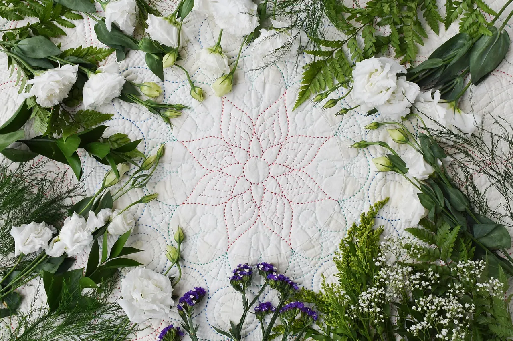
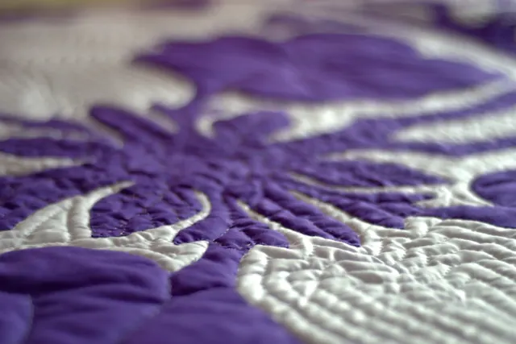
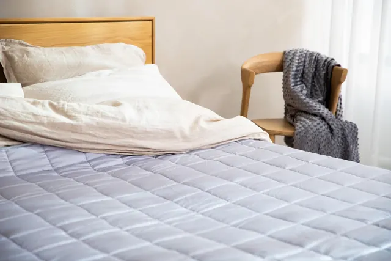

Çeyiz rehberi: yorgan, yastık ve döşekte nelere dikkat etmeli?
Çeyize kaç yorgan, kaç yastık konur? Saten mi pamuklu mu? İşlemeli yorgan ne kadar önce sipariş edilmeli? Bir yorgancının listesi.

Çeyiz hazırlığı ailelerin en heyecanlı işlerinden biri ve yorgan, çeyizin en kalıcı parçalarındandır. İyi dikilmiş bir yün ya da pamuk yorgan, bakımı yapıldığında yıllarca kullanılır. Aşağıda dükkânda en çok sorulan çeyiz sorularını topladık.
Çeyiz için temel liste
Her ailenin geleneği farklı; aşağıdaki liste bir başlangıç noktası:
- Yorgan: 1 kışlık çift kişilik (yün ya da pamuk) + 1 yazlık/dört mevsim çift kişilik. İsteğe göre 1 işlemeli saten çeyiz yorganı.
- Misafir için: 1–2 tek kişilik yorgan (silikon pratik olur).
- Yastık: Yatak için 2–4, misafir için 2 (silikon, pamuk ya da yün).
- Yatak koruma: 1 yatak pedi ve 1 alez.
- Örtü: 2–3 nevresim takımı, 1 battaniye.
- İsteğe bağlı: yün döşek ve minder takımı.
Saten mi, pamuklu mu?
Saten yüz parlak ve gösterişlidir; göbek desenleri satende çok güzel görünür. Ancak kaygandır ve ten teması pamuk kadar serin değildir. Bu yüzden saten çeyiz yorganı genellikle nevresimle kullanılır ya da özel günlerde açılır. Pamuklu yüz günlük kullanım için daha rahattır. Pek çok aile bir saten işlemeli, bir de pamuklu günlük yorgan tercih ediyor.
Göbek, köşe ve kafes desenleri
Geleneksel yorganlarda ortada bir göbek (madalyon), köşelerde süs ve aradaki alanda kafes ya da yelpaze dikişleri bulunur. Desen sadece süs değildir: dikişler dolgunun kaymasını önler. Dükkânda isim, düğün tarihi ya da isteğe göre özel bir motif de işlenebilir. Ramazan usta 2015'te Günhaber'e konu olan haberde, müşteri isteğiyle yorganlara logo ve farklı desenler işlediğini anlatmıştı.
Ne kadar önceden sipariş vermeli?
El dikimi yorgan elde emek ister; düğün sezonunda (ilkbahar ve yaz) dükkânın yoğunluğu artar. Düğün tarihinizden en az birkaç hafta önce konuşmanızı öneririz; kesin teslim gününü usta iş yoğunluğuna göre söyler. Çeyiz yorganı sayfasından ya da İsteğe Özel Üretim formundan ölçü, dolgu, renk ve desen tercihinizi gönderebilirsiniz.
Bütçe nasıl planlanır?
- Önce kullanılacak yorganlara (kışlık + yazlık) bütçe ayırın; gösteriş parçası sonra gelir.
- Yün ve pamuk yorgan pahalı görünür ama yenilenebildiği için uzun vadede ekonomiktir.
- Toplu çeyiz siparişlerinde fiyatı ustayla birlikte konuşun.
Saklama
Çeyiz yorganları bazen yıllarca sandıkta bekler. Kuru, havadar, pamuklu torbada saklayın; yılda bir açıp havalandırın. Ayrıntılar için bakım rehberimize bakın.
Sorunuz mu var?
Yatağınızın ölçüsünü, odanızın ne kadar sıcak olduğunu ya da yorganınızın fotoğrafını gönderin; Ramazan usta önerisini söylesin.
Sık sorulan sorular
Çeyize kaç yorgan konur?
Genelde 1 kışlık + 1 yazlık çift kişilik yorgan, misafir için 1–2 tek kişilik yorgan yeterlidir. İsteğe göre bir işlemeli saten yorgan eklenir.
Yorgana isim işlenebilir mi?
Evet. İsim, düğün tarihi ya da isteğe göre motif işlenebilir; isteğinizi sipariş notuna yazın.
Çeyiz yorganı ne kadar sürede hazır olur?
Teslim süresi iş yoğunluğuna göre değişir; usta size kesin günü söyler. Düğün sezonunda erken sipariş önerilir.
Kişiye özel çeyiz yorganı iade edilebilir mi?
Kişiye özel üretilen ürünler mevzuat gereği cayma hakkı kapsamında değildir; bu yüzden ölçü, renk ve desen siparişten önce birlikte netleştirilir.
Yazıda geçen ürünler

Saten yüz, göbek deseni, köşe süsü; isterseniz isim ya da tarih işlenir.

Ustanın elinden, yıkanmış ve atılmış yünle; saten ya da pamuklu yüzle dikilir.


Kaynaklar
- Günhaber (30.04.2015). Siyasi partilerin logosunu yorgana işliyor (DHA, Korkuteli).
- Mesafeli Sözleşmeler Yönetmeliği (RG 27.11.2014, sayı 29188), md. 15.
Bu yazı genel bilgilendirme amaçlıdır; tıbbi tavsiye değildir. Sağlıkla ilgili şikâyetleriniz için hekiminize danışın.